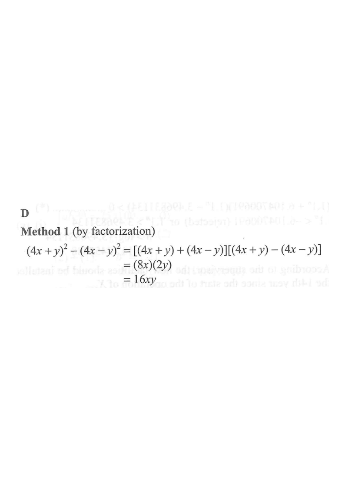

Step 1 — Identify the given expression and the difference-of-squares pattern.
Question. Simplify the following expression.

The expression has the form $A^2-B^2$, where $A=4x+y$ and $B=4x-y$. This is the difference of two squares.
$A^2-B^2=(A+B)(A-B)$
$A+B=(4x+y)+(4x-y)=8x$
$A-B=(4x+y)-(4x-y)=4x+y-4x+y=2y$
$(4x+y)^2-(4x-y)^2=(8x)(2y)$
$=16xy$
$(4x+y)^2=16x^2+8xy+y^2$
$(4x-y)^2=16x^2-8xy+y^2$
Subtracting: $8xy-(-8xy)=16xy$ ✓
Question. Simplify \((3p+2q)^{2}-(3p-2q)^{2}\).